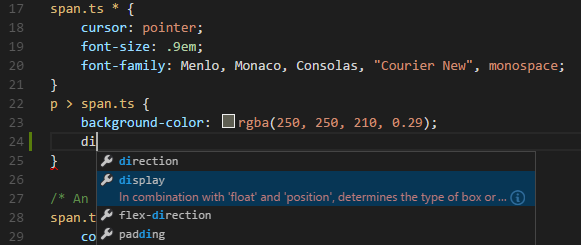
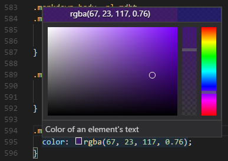

CSS, SCSS and Less
Visual Studio Code has built-in support for editing style sheets in CSS .css, SCSS .scss and Less .less. In addition, you can install an extension for greater functionality.
Tip: Click on an extension tile above to read the description and reviews to decide which extension is best for you. See more in the Marketplace.
IntelliSense
VS Code has support for selectors, properties and values. Use kb(editor.action.triggerSuggest) to get a list of context specific options.

Proposals contain extensive documentation, including a list of browsers that support the property. To see the full description text of the selected entry, use kb(toggleSuggestionDetails).
Syntax coloring & color preview
As you type, there is syntax highlighting as well as in context preview of colors.

Clicking on a color preview will launch the integrated color picker which supports configuration of hue, saturation and opacity.

Tip: You can trigger between different color modes by clicking on the color string at the top of the picker.
You can hide VS Code's color previews by setting the following setting:
"editor.colorDecorators": false
To just disable it for css, Less and SCSS, use
"[css]": {
"editor.colorDecorators": false
}
Folding
You can fold regions of source code using the folding icons on the gutter between line numbers and line start. Folding regions are available for all declarations (for example, rule declarations) and for multiline comments in the source code.
Additionally you can use the following region markers to define a folding region:
/*#region*/ and /*#endregion*/ in CSS/SCSS/Less or // #region and // #endregion In SCSS/Less.
If you prefer to switch to indentation based folding for CSS, Less and SCSS, use:
"[css]": {
"editor.foldingStrategy": "indentation"
},
Emmet snippets
Emmet abbreviation support is built into VS Code, suggestions are listed along with other suggestions and snippets in the editor auto-completion list.
Tip: See the CSS section of the Emmet cheat sheet for valid abbreviations.
VS Code also supports User Defined Snippets.
Syntax Verification & Linting
There is support for CSS version <= 2.1, Sass version <= 3.2 and Less version <= 2.3.
Note: You can disable VS Code's default CSS, Sass or Less validation by setting the corresponding
.validateUser or Workspace setting to false."css.validate": false
Go to Symbol in file
You can quickly navigate to the relevant CSS symbol in the current file by pressing kb(workbench.action.gotoSymbol).
Hovers
Hovering over a selector or property will provide an HTML snippet that is matched by the CSS rule.

Go to Declaration and Find References
This is supported for Sass and Less variables in the same file. CSS variables per the draft standards proposal are also supported.
There is jump to definition for @import and url() links in CSS, SCSS and Less.
CSS custom data
You can extend VS Code's CSS support through a declarative custom data format. By setting css.customData to a list of JSON files following the custom data format, you can enhance VS Code's understanding of new CSS properties, at-directives, pseudo-classes and pesudo-elements. VS Code will then offer language support such as completion & hover information for the provided properties, at-directives, pseudo-classes and pesudo-elements.
You can read more about using custom data in the vscode-custom-data repository.
Transpiling Sass and Less into CSS
VS Code can integrate with Sass and Less transpilers through our integrated task runner. We can use this to transpile .scss or .less files into .css files. Let's walk through transpiling a simple Sass/Less file.
Step 1: Install a Sass or Less transpiler
For this walkthrough, let's use either the sass or less Node.js module.
Note: If you don't have Node.js and the npm package manager already installed, you'll need to do so for this walkthrough. Install Node.js for your platform. The Node Package Manager (npm) is included in the Node.js distribution. You'll need to open a new terminal (command prompt) for
npmto be on your PATH.
npm install -g sass less
Step 2: Create a simple Sass or Less file
Open VS Code on an empty folder and create a styles.scss or styles.less file. Place the following code in that file:
$padding: 6px;
nav {
ul {
margin: 0;
padding: $padding;
list-style: none;
}
li { display: inline-block; }
a {
display: block;
padding: $padding 12px;
text-decoration: none;
}
}
For the Less version of the above file, just change $padding to @padding.
Note: This is a very simple example, which is why the source code is almost identical between both file types. In more advanced scenarios, the syntaxes and constructs will be much different.
Step 3: Create tasks.json
The next step is to set up the task configuration. To do this, run Terminal > Configure Tasks and click Create tasks.json file from template. In the selection dialog that shows up, select Others.
This will create a sample tasks.json file in the workspace .vscode folder. The initial version of file has an example to run an arbitrary command. We will modify that configuration for transpiling Sass/Less instead:
// Sass configuration
{
// See https://go.microsoft.com/fwlink/?LinkId=733558
// for the documentation about the tasks.json format
"version": "2.0.0",
"tasks": [
{
"label": "Sass Compile",
"type": "shell",
"command": "sass styles.scss styles.css",
"group": "build"
}
]
}
// Less configuration
{
// See https://go.microsoft.com/fwlink/?LinkId=733558
// for the documentation about the tasks.json format
"version": "2.0.0",
"tasks": [
{
"label": "Less Compile",
"type": "shell",
"command": "lessc styles.less styles.css",
"group": "build"
}
]
}
Step 4: Run the Build Task
As this is the only command in the file, you can execute it by pressing kb(workbench.action.tasks.build) (Run Build Task). The sample Sass/Less file should not have any compile problems, so by running the task all that happens is a corresponding styles.css file is created.
Since in more complex environments there can be more than one build task we prompt you to pick the task to execute after pressing kb(workbench.action.tasks.build) (Run Build Task). In addition, we allow you to scan the output for compile problems (errors and warnings). Depending on the compiler, select an appropriate entry in the list to scan the tool output for errors and warnings. If you don't want to scan the output, select Never scan the build output from the presented list.
At this point, you should see an additional file show up in the file list styles.css.
If you want to make the task the default build task to run execute Configure Default Build Task from the global Terminal menu and select the corresponding Sass or Less task from the presented list.
Note: If your build fails or you see an error message such as "An output directory must be specified when compiling a directory", be sure the filenames in your
tasks.jsonmatch the filenames on disk. You can always test your build by runningsass styles.scss styles.cssfrom the command line.
Automating Sass/Less compilation
Let's take things a little further and automate Sass/Less compilation with VS Code. We can do so with the same task runner integration as before, but with a few modifications.
Step 1: Install Gulp and some plug-ins
We will use Gulp to create a task that will automate Sass/Less compilation. We will also use the gulp-sass plug-in to make things a little easier. The Less plug-in is gulp-less.
We need to install gulp both globally (-g switch) and locally:
npm install -g gulp
npm install gulp gulp-sass gulp-less
Note:
gulp-sassandgulp-lessare Gulp plug-ins for thesassandlesscmodules we were using before. There are many other Gulp Sass and Less plug-ins you can use, as well as plug-ins for Grunt.
You can test that your gulp installation was successful by typing gulp -v in the terminal. You should see a version displayed for both the global (CLI) and local installations.
Step 2: Create a simple Gulp task
Open VS Code on the same folder from before (contains styles.scss/styles.less and tasks.json under the .vscode folder), and create gulpfile.js at the root.
Place the following code in the gulpfile.js file:
// Sass configuration
var gulp = require('gulp');
var sass = require('gulp-sass')(require('sass'));
gulp.task('sass', function(cb) {
gulp.src('*.scss')
.pipe(sass())
.pipe(gulp.dest(function(f) {
return f.base;
}));
cb();
});
gulp.task('default', gulp.series('sass', function(cb) {
gulp.watch('*.scss', gulp.series('sass'));
cb();
}));
// Less configuration
var gulp = require('gulp');
var less = require('gulp-less');
gulp.task('less', function(cb) {
gulp.src('*.less')
.pipe(less())
.pipe(gulp.dest(function(f) {
return f.base;
}));
cb();
});
gulp.task('default', gulp.series('less', function(cb) {
gulp.watch('*.less', gulp.series('less'));
cb();
}));
What is happening here?
- Our
defaultgulp task first runs thesassorlesstask once when it starts up. - It then watches for changes to any SCSS/Less file at the root of our workspace, for example the current folder open in VS Code.
- It takes the set of SCSS/Less files that have changed and runs them through our respective compiler, for example
gulp-sass,gulp-less. - We now have a set of CSS files, each named respectively after their original SCSS/Less file. We then put these files in the same directory.
Step 3: Run the gulp default task
To complete the tasks integration with VS Code, we will need to modify the task configuration from before to run the default Gulp task we just created. You can either delete the tasks.json file or empty it only keeping the "version": "2.0.0" property. Now execute Run Task from the global Terminal menu. Observe that you are presented with a picker listing the tasks defined in the gulp file. Select gulp: default to start the task. We allow you to scan the output for compile problems. Depending on the compiler, select an appropriate entry in the list to scan the tool output for errors and warnings. If you don't want to scan the output, select Never scan the build output from the presented list. At this point, if you create and/or modify Less or SASS files, you see the respective CSS files generated and/or changes reflected on save. You can also enable Auto Save to make things even more streamlined.
If you want to make the gulp: default task the default build task executed when pressing kb(workbench.action.tasks.build) run Configure Default Build Task from the global Terminal menu and select gulp: default from the presented list.
Step 4: Terminate the gulp default Task
The gulp: default task runs in the background and watches for file changes to Sass/Less files. If you want to stop the task, you can use the Terminate Task from the global Terminal menu.
Customizing CSS, SCSS and Less Settings
You can configure the following lint warnings as User and Workspace Settings.
The validate setting allows you turn off the built-in validation. You would do this if you rather use a different linter.
| Id | Description | Default |
|---|---|---|
| css.validate | Enables or disables all css validations | true |
| less.validate | Enables or disables all less validations | true |
| scss.validate | Enables or disables all scss validations | true |
To configure an option for CSS, use css.lint. as the prefix to the id; for SCSS and Less, use scss.lint. and less.lint..
Set a setting to warning or error if you want to enable lint checking, use ignore to disable it. Lint checks are performed as you type.
| Id | Description | Default |
|---|---|---|
| validate | Enables or disables all validations | true |
| compatibleVendorPrefixes | When using a property with a vendor-specific prefix (for example -webkit-transition), make sure to also include all other vendor-specific properties e.g. -moz-transition, -ms-transition and -o-transition |
ignore |
| vendorPrefix | When using a property with a vendor-specific prefix for example -webkit-transition, make sure to also include the standard property if it exists e.g. transition |
warning |
| duplicateProperties | Warn about duplicate properties in the same ruleset | ignore |
| emptyRules | Warn about empty rulesets | warning |
| importStatement | Warn about using an import statement as import statements are loaded sequentially which has a negative impact on web page performance |
ignore |
| boxModel | Do not use width or height when using padding or border |
ignore |
| universalSelector | Warn when using the universal selector * as it is known to be slow and should be avoided |
ignore |
| zeroUnits | Warn when having zero with a unit e.g. 0em as zero does not need a unit. |
ignore |
| fontFaceProperties | Warn when using @font-face rule without defining a src and font-family property |
warning |
| hexColorLength | Warn when using hex numbers that don't consist of three or six hex numbers | error |
| argumentsInColorFunction | Warn when an invalid number of parameters in color functions e.g. rgb |
error |
| unknownProperties | Warn when using an unknown property | warning |
| ieHack | Warn when using an IE hack *propertyName or _propertyName |
ignore |
| unknownVendorSpecificProperties | Warn when using an unknown vendor-specific property | ignore |
| propertyIgnoredDueToDisplay | Warn when using a property that is ignored due to the display. For example, with display: inline, the width, height, margin-top, margin-bottom, and float properties have no effect. |
warning |
| important | Warn when using !important as it is an indication that the specificity of the entire CSS has gotten out of control and needs to be refactored. |
ignore |
| float | Warn when using float as floats lead to fragile CSS that is easy to break if one aspect of the layout changes. |
ignore |
| idSelector | Warn when using selectors for an id #id as selectors should not contain IDs because these rules are too tightly coupled with the HTML. |
ignore |
Next steps
Read on to find out about:
- Configure Tasks - Dig into Tasks to help you transpile your SCSS and Less to CSS.
- Basic Editing - Learn about the powerful VS Code editor.
- Code Navigation - Move quickly through your source code.
- HTML - CSS is just the start, HTML is also very well supported in VS Code.
Common questions
Does VS Code provide a color picker?
Yes, color picker has been added in version 1.15.
Is there support for the indentation based Sass syntax (.sass)?
No, but there are several extensions in the Marketplace supporting the indented flavor of Sass, for example, the Sass extension originally created by Robin Bentley, now maintained by Leonard Grosoli.